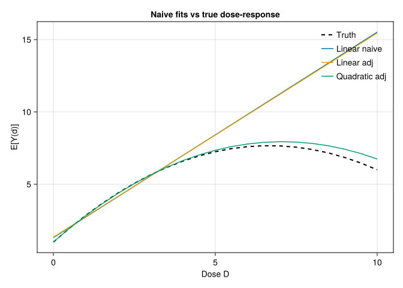
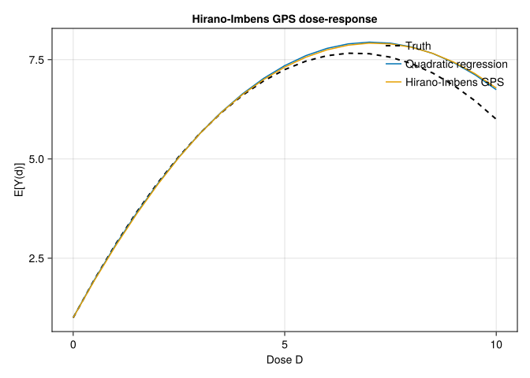
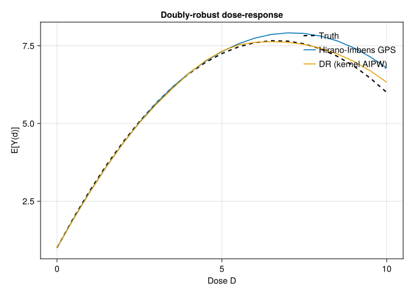

using DataFrames
using Distributions
using GLM
using Statistics
using Random
using LinearAlgebra
using Printf
using CairoMakie10 Continuous and Multivalued Treatments
So far most examples use a binary treatment. Many treatments are not binary: dose, dollars, hours, or a treatment with several levels. In those cases “the treatment effect” is not one number. We usually want a dose-response curve,
\[ \mu(d) = \mathbb{E}[Y(d)], \quad d \in \mathcal{D}. \]
Here I implement two approaches directly in Julia: the generalized propensity score (Hirano-Imbens 2004) and a doubly-robust extension. For modified treatment policies and time-varying treatments, R’s lmtp package is still the better practical tool; see the R companion chapter and the LMTP blog chapter.
10.1 Setup
Random.seed!(42)
n = 2000
X1 = randn(n)
X2 = randn(n)
# Continuous treatment, depends on X1, X2
D = @. 2.0 + 0.5 * X1 + 0.5 * X2 + randn()
# Dose-response: concave in D, with diminishing returns. Not "hump-shaped" over
# the observed range: the vertex is at d = 2/0.3 = 6.67, beyond the largest dose
# drawn below, so the slope 2 - 0.3d stays positive throughout the support and no
# downturn is identified from these data.
true_mu(d) = 1.0 + 2.0 * d - 0.15 * d^2
Y = @. true_mu(D) + 0.3 * X1 - 0.3 * X2 + 0.5 * randn()
df = DataFrame(Y = Y, D = D, X1 = X1, X2 = X2)
@printf("Treatment range: [%.2f, %.2f]\n", minimum(D), maximum(D))
@printf("True μ(d=2) = %.2f, μ(d=4) = %.2f, μ(d=6) = %.2f\n",
true_mu(2), true_mu(4), true_mu(6))Treatment range: [-2.01, 5.97]
True μ(d=2) = 4.40, μ(d=4) = 6.60, μ(d=6) = 7.6010.2 Naive regression vs adjusted regression
A linear fit on \(D\) alone has two problems: it ignores confounding by \(X\), and it imposes a straight line on a nonlinear dose-response curve.
df.D2 = df.D .^ 2
linear_naive = lm(@formula(Y ~ D), df)
linear_adj = lm(@formula(Y ~ D + X1 + X2), df)
poly_adj = lm(@formula(Y ~ D + D2 + X1 + X2), df)
ds = 0.0:0.5:10.0
predict_mu(fit) = Float64.(predict(fit, DataFrame(D = collect(ds),
D2 = collect(ds) .^ 2,
X1 = 0, X2 = 0)))
fits = (
linear_naive = predict_mu(linear_naive),
linear_adj = predict_mu(linear_adj),
poly_adj = predict_mu(poly_adj),
)
truth = true_mu.(ds)
fig = Figure(size = (700, 400))
ax = Axis(fig[1, 1], xlabel = "Dose D", ylabel = "E[Y(d)]",
title = "Naive fits vs true dose-response")
lines!(ax, ds, truth, color = :black, linestyle = :dash,
linewidth = 2, label = "Truth")
lines!(ax, ds, fits.linear_naive, label = "Linear naive")
lines!(ax, ds, fits.linear_adj, label = "Linear adj")
lines!(ax, ds, fits.poly_adj, label = "Quadratic adj")
axislegend(ax, position = :rt, framevisible = false)
fig
The quadratic adjusted model is better in this simulation because the true curve is quadratic. In real applications, the functional form is usually not known.
10.3 Generalized Propensity Score (Hirano-Imbens 2004)
The generalized propensity score is the conditional density of the treatment given covariates:
\[ r(d, x) = f_{D \mid X}(d \mid x). \]
Under unconfoundedness, the GPS plays the same role as the propensity score for binary treatment. I start with a normal model for treatment given covariates:
gps_model = lm(@formula(D ~ X1 + X2), df)
d_pred = predict(gps_model)
sigma_e = sqrt(sum(abs2.(residuals(gps_model))) / dof_residual(gps_model))
df.gps = @. pdf(Normal(d_pred, sigma_e), df.D)
@printf("GPS summary: min=%.4f, mean=%.4f, max=%.4f\n",
minimum(df.gps), mean(df.gps), maximum(df.gps))GPS summary: min=0.0009, mean=0.2806, max=0.3962The Hirano-Imbens estimator has two steps. First regress \(Y\) on flexible functions of \(D\) and the estimated GPS. Then, for each dose \(d\), average the predicted outcome over the sample.
# Stage 2: regress Y on flexible function of D and the GPS
df.gps2 = df.gps .^ 2
hi_fit = lm(@formula(Y ~ D + D2 + gps + gps2 + D & gps), df)
# Dose-response at each d: average over the empirical GPS distribution at that d
function estimate_dose(d)
gps_at_d = @. pdf(Normal(d_pred, sigma_e), d)
nd = DataFrame(D = fill(d, n), D2 = fill(d^2, n),
gps = gps_at_d, gps2 = gps_at_d .^ 2)
mean(predict(hi_fit, nd))
end
hi_dose = [estimate_dose(d) for d in ds]
fig2 = Figure(size = (700, 400))
ax2 = Axis(fig2[1, 1], xlabel = "Dose D", ylabel = "E[Y(d)]",
title = "Hirano-Imbens GPS dose-response")
lines!(ax2, ds, truth, color = :black, linestyle = :dash,
linewidth = 2, label = "Truth")
lines!(ax2, ds, fits.poly_adj, label = "Quadratic regression")
lines!(ax2, ds, hi_dose, label = "Hirano-Imbens GPS")
axislegend(ax2, position = :rt, framevisible = false)
fig2
In this example the GPS estimator tracks the nonlinear curve much better than the naive linear regression.
10.4 Doubly-robust dose-response estimation
A kernel-localized AIPW estimator — in the spirit of Kennedy et al. (2017), who develop a more elaborate pseudo-outcome version with formal guarantees — is the continuous-treatment analogue of AIPW. It combines an outcome model \(\hat\mu(d,x)\) with the GPS \(\hat r(d \mid x)\):
\[ \hat\mu_{DR}(d) = \frac{1}{n} \sum_i \hat\mu(d, X_i) + \sum_i \tilde w_i(d)\,\bigl(Y_i - \hat\mu(D_i, X_i)\bigr), \qquad \tilde w_i(d) = \frac{w_i(d)}{\sum_j w_j(d)}, \quad w_i(d) = \frac{K_h(D_i - d)}{\hat r(D_i \mid X_i)} \]
where \(K_h\) is a kernel around dose \(d\). The code self-normalizes the kernel weights (a Hájek/stabilized form, \(\sum_i \tilde w_i = 1\)) rather than dividing by \(n\), which stabilizes the correction term in finite samples.
# Outcome model: μ̂(D, X)
mu_fit = lm(@formula(Y ~ D + D2 + X1 + X2 + D & X1 + D & X2), df)
# Predict μ̂(D_i, X_i) for the observed treatments
mu_at_obs = predict(mu_fit)
# DR dose-response at a grid
function dr_estimate(d; h = 0.5)
nd = DataFrame(D = fill(d, n), D2 = fill(d^2, n),
X1 = df.X1, X2 = df.X2)
mu_at_d = predict(mu_fit, nd)
kernel = @. pdf(Normal(0, h), df.D - d)
weight = @. kernel / df.gps
weight ./= mean(weight)
correction = @. weight * (df.Y - mu_at_obs)
mean(mu_at_d) + mean(correction)
end
dr_dose = [dr_estimate(d) for d in ds]
fig3 = Figure(size = (700, 400))
ax3 = Axis(fig3[1, 1], xlabel = "Dose D", ylabel = "E[Y(d)]",
title = "Doubly-robust dose-response")
lines!(ax3, ds, truth, color = :black, linestyle = :dash,
linewidth = 2, label = "Truth")
lines!(ax3, ds, hi_dose, label = "Hirano-Imbens GPS")
lines!(ax3, ds, dr_dose, label = "DR (kernel AIPW)")
axislegend(ax3, position = :rt, framevisible = false)
fig3
Read this self-normalized kernel correction as an illustrative kernel-AIPW construction, not a turnkey doubly robust theorem. The informal “consistent if either the outcome model or the GPS is correct” statement is the discrete-treatment intuition; for continuous treatments a formal doubly robust dose-response result additionally needs bandwidth, nuisance-convergence-rate, smoothness, and orthogonalization conditions (see Kennedy et al. on continuous-treatment DR estimators). The bandwidth \(h\) trades bias against variance.
10.5 Multivalued treatments
For a discrete multivalued treatment \(D \in \{0,1,\ldots,K\}\), the GPS is a multinomial probability:
\[ \hat r(d, x) = \widehat{P}(D = d \mid X = x). \]
A multinomial regression supplies \(\hat r\). The dose-response curve becomes the average outcome under each treatment level.
# Simulate a 4-level treatment
Random.seed!(99)
n_mv = 2000
X_mv = randn(n_mv, 2)
util = hcat(zeros(n_mv),
@.(0.2 + 0.5 * X_mv[:, 1]),
@.(0.3 + 0.4 * X_mv[:, 2]),
@.(0.5 + 0.3 * X_mv[:, 1] + 0.3 * X_mv[:, 2]))
# Softmax to get probabilities
exp_util = exp.(util)
prob_mv = exp_util ./ sum(exp_util, dims = 2)
D_mv = [rand(Distributions.Categorical(prob_mv[i, :])) - 1 for i in 1:n_mv]
Y_mv = @. 0.5 * D_mv + 0.3 * X_mv[:, 1] - 0.2 * X_mv[:, 2] + randn()
# Unadjusted group means by treatment level (NOT causal: treatment assignment
# depends on X, and Y also depends on X, so these are confounded comparisons).
mv_df = DataFrame(Y = Y_mv, D = D_mv, X1 = X_mv[:, 1], X2 = X_mv[:, 2])
by_d = combine(groupby(mv_df, :D), :Y => mean => :y_mean, :Y => length => :n)
@printf("%-6s %12s %12s\n", "D", "Unadj Mean(Y)", "N")
for r in eachrow(by_d)
@printf("%-6d %12.3f %12d\n", r.D, r.y_mean, r.n)
endD Unadj Mean(Y) N
0 -0.022 406
1 0.622 486
2 0.879 521
3 1.569 587The table above shows unadjusted group means, not causal dose-response estimates: because treatment assignment depends on \(X\) and \(Y\) also depends on \(X\), the level-to-level differences are confounded. To recover causal contrasts one would weight by the multinomial GPS (or model the outcome). In practice, I would report adjusted contrasts between levels, such as \(D=1\) versus \(D=0\) or \(D=2\) versus \(D=1\).
10.6 When to reach for these methods
These methods are useful when:
- Treatment is continuous or multivalued.
- The research question is about the shape of the dose-response curve, not just one binary contrast.
For binary treatments, the standard Estimation and Heterogeneous Effects methods are sufficient.
For time-varying continuous treatments and modified-policy interventions, use LMTP in R for now. A Julia version would be useful, but this book does not need to reimplement it.
10.7 Summary
- Continuous and multivalued treatments usually require a dose-response curve, not a single coefficient.
- GPS extends propensity-score logic to continuous treatments by modeling the density of treatment given covariates.
- The kernel-AIPW doubly-robust estimator adds an outcome model to the GPS.
- For modified treatment policies and time-varying continuous treatments, use R’s
lmtppackage.